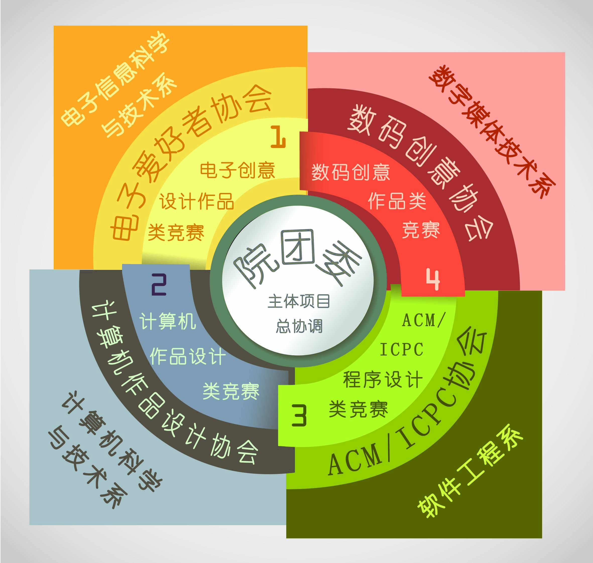
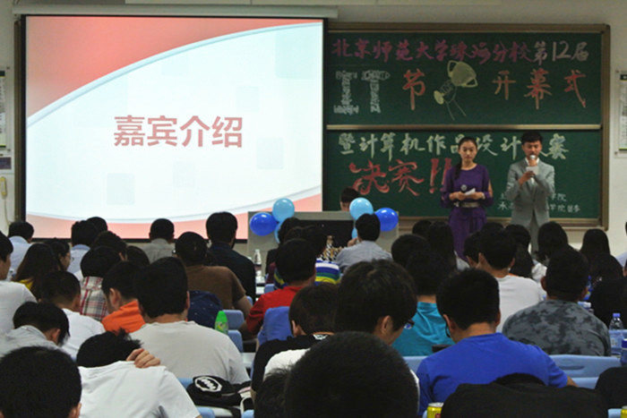
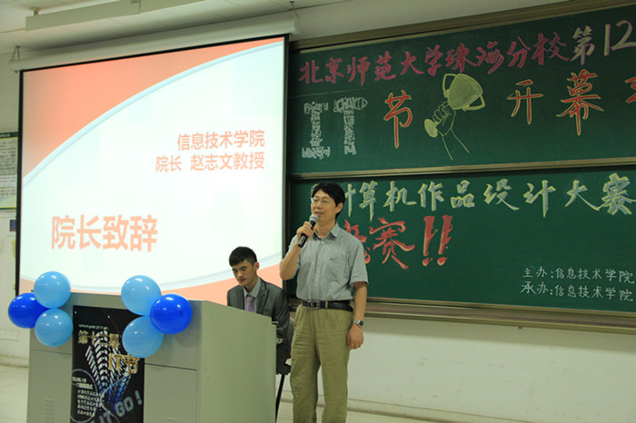
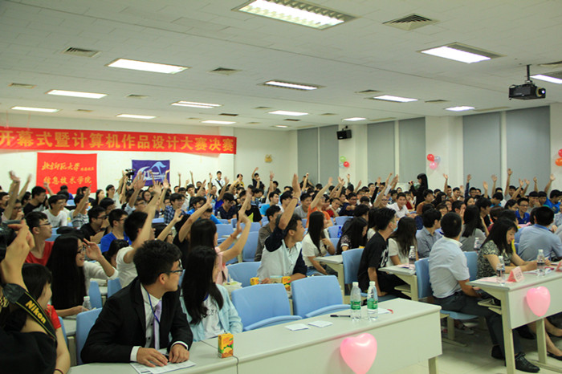
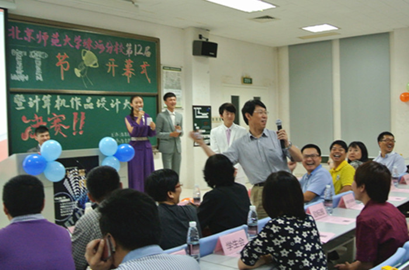
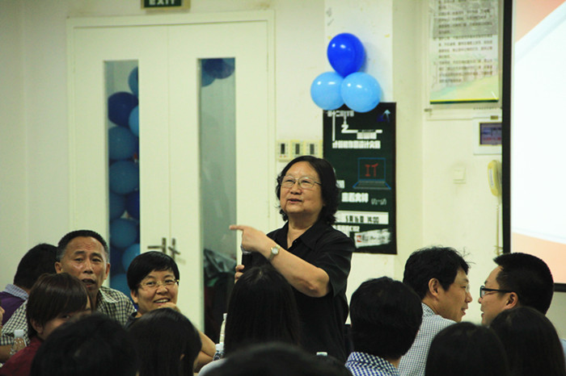
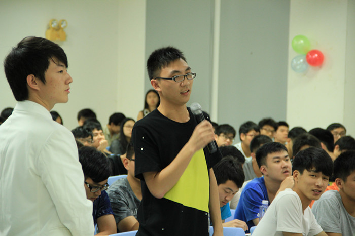

2015年5月16日下午两点，北京师范大学珠海分校第十二届IT节开幕式在乐育C102隆重举行。连日来的阴霾大雨也无法浇灭同学们对IT的热情，下午1:30分，活动现场就已座无虚席。本届IT节的主题是“Let IT Go！”，意欲希望同学们秉承创新精神，放飞IT梦想。
（开幕式现场）IT节是一个传统、正式、且拥有广大群众基础和支持的特色活动，现已成为全校知名品牌活动，由信息技术学院主办，院团委承办，ACM协会、计算机作品协会、电子爱好者协会、数码创意协会、院学生会协办。
IT节作为信息技术学院学生活动“雏鹰展翅”的重要组成部分，被称为“雏鹰之翼”，包含了“雏鹰展翅”的治学理念“以学科竞赛为导向的全覆盖式专业拓展”和基本理念“一系一品，一专一赛”，做到将第一课堂和第二课堂的无缝结合。

（“雏鹰展翅”活动开展情况）参加本次开幕式的嘉宾有：信息技术学院院长赵志文教授、院学术委员会主任彭望琭教授、院党总支书记、副院长吕威教授、院副院长倪玉华教授、院党总支副书记、学工办主任罗思杰老师、院工会主席陈星火副研究员、计算机系系主任黄静教授、数字媒体技术系系主任郎波副教授、计算机作品设计大赛总指挥杨永平老师、计算机系黄秋颖高级工程师、计算机系王鹏老师、电子与电气系：杨博雄副教授、院团委书记赖海婷老师以及各个学生组织、社团的代表。同时，开幕式还吸引了来自励耘报的记者们。

（开幕式现场）本届IT节首先播放了第十一届IT节的回顾视频，带我们回顾了上一届IT节的一幕幕精彩瞬间。视频在增强同学们对IT节的了解的同时，还为我们带来了一场别样的IT风暴。

(赵志文院长致辞)紧接着，在主持人的邀请下，由信息技术学院院长赵志文教授上台发言。首先，他为我们详细解读了IT的定义以及IT行业在现今社会中的重要作用。与我们分享完了IT的强大魅力之后，院长寄希望于信息技术学院的IT学子们，希望他们能够成为未来的IT之星。随后，伴随着全场热烈的掌声，赵志文院长宣布：第十二届IT节开幕！

（有奖竞猜环节）
（赵志文教授选取幸运观众）
（彭望琭教授选取幸运观众）在开幕式的最后，紧张、活跃的微信刮刮乐抽奖环节和IT节有奖竞猜环节，激发了同学们的热情，大家纷纷踊跃 举手回答问题，也将现场的气氛推到了最高点。随着主持人与台下观众的互动，由各位嘉宾选出幸运同学，回答出IT节的相关题目并赢得精美奖品，引得场上发出阵阵欢呼。至此，第十二届IT节正式拉开帷幕！

（幸运观众回答问题）